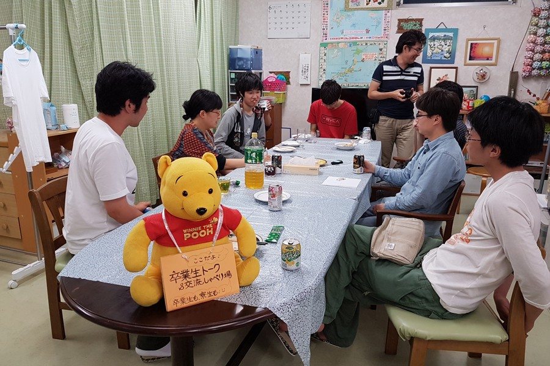
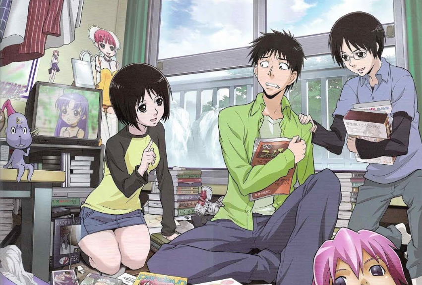

Treatments for Hikikomori
There are currently several ways for hikikomori to get treated. There are community support centers for hikikomori located throughout Japan where family members can receive consultations and job placement support. Therapy is one option; hikikomori can undergo psychotherapy where the the root of the trauma is addressed or participate in family therapy which involves the patient and family members of the patient.


Hikikomori can also undergo exposure treatment which gradually increases the social contact they experience until they can reintegrate into society. This can be done individually or in combined exposure with other social recluses through activities done on a weekly or daily basis. There is even an organization that hire women as sister figures for their "Rent-a-sister" program which conducts exposure treatment by sending these "sisters" to hikikomori to listen and interact with them.